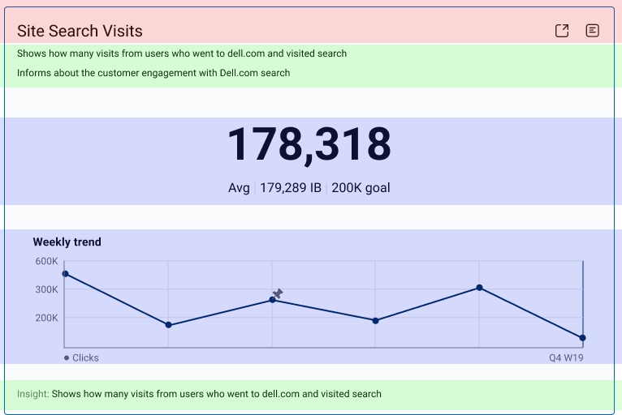
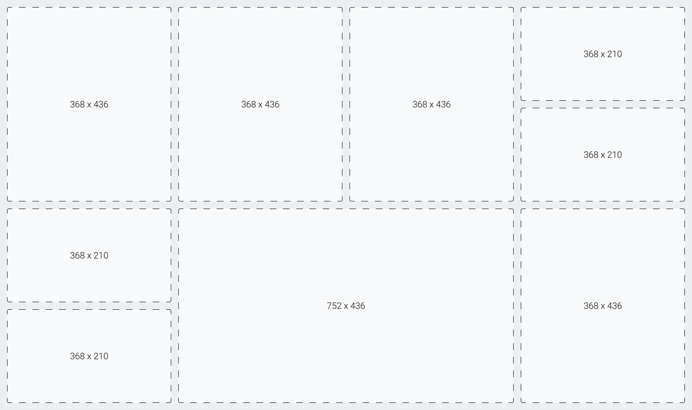
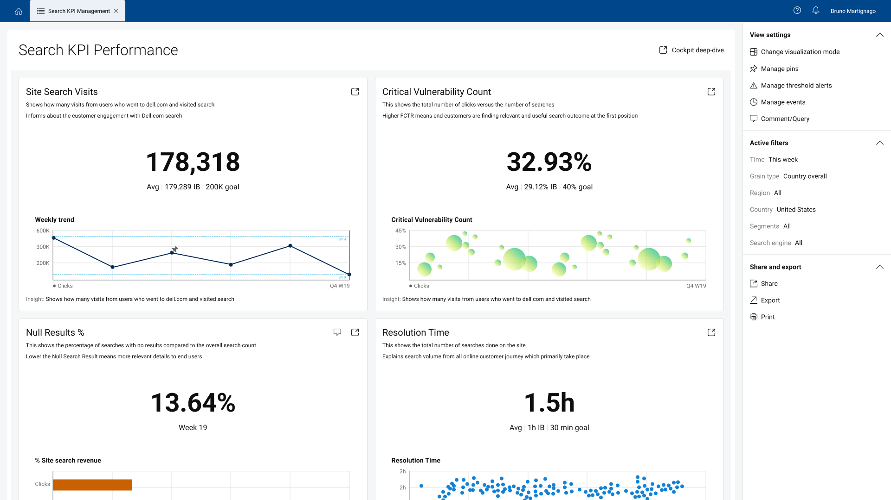
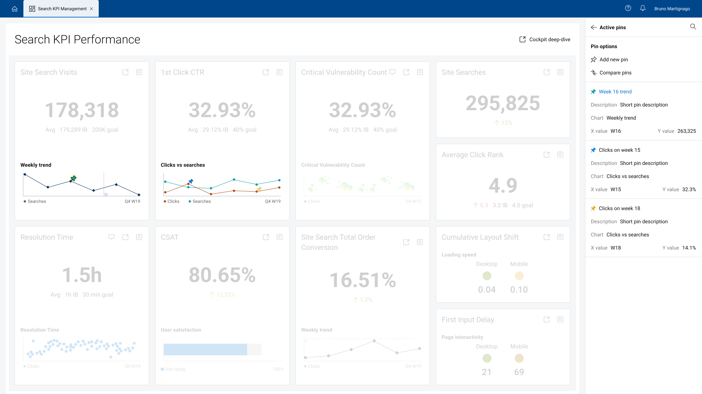
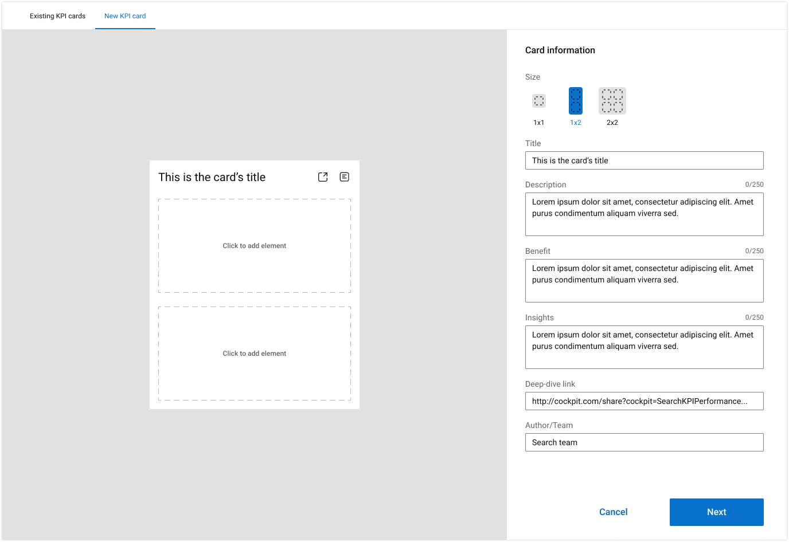
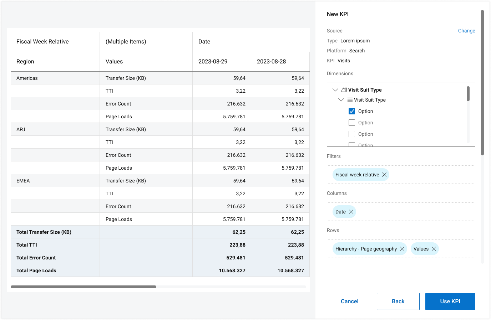

Entry 01
Introduction
The platform needed to be easy enough that anyone interested in consuming data could see and interact with the KPI cards, yet robust enough for data analysts to build and customize cards and dashboards.
Case file 05 · Product design
Cockpit is a solo project I took on in 2023, where the main challenge was to build a platform for building, managing, sharing, and operating with KPIs.
The platform needed to be easy enough that anyone interested in consuming data could see and interact with the KPI cards, yet robust enough for data analysts to build and customize cards and dashboards.
One of the key challenges this project faced was the sheer number of information types that could be displayed in these cards, so it made sense to have different sizes for different types of cards. This way, it also allowed us to build the cockpit as a grid-style dashboard, with specific card sizes you can compose like Lego bricks.
The card is composed of 3 main parts:
Heading
Shows the card’s title and the actions you can perform with it, such as opening in a separate tab or viewing extra information.Elements
The smallest part of a KPI card, but the most fundamental. It can be almost anything, from labels to charts to maps to images.Extra information
Key for providing users with details about the visualization and highlighting insights and trends.
Building the cards this way and following a strict sizing format allowed us to create a highly interactive dashboard where you can insert cards of diverse sizes and content and make them fit like Lego pieces.
Card sizes are the real slot sizes (368 × 210, 368 × 436, 752 × 436); card values come from the dashboard.

1 / 8
Card values come from the dashboard screenshots below; the sparklines are illustrative.

Default view. It has bigger cards with accessible extra information to help users understand the meaning and insights of the charts.
Allows users to see more cards at once, and it is dedicated to users who are familiar with the platform and know how to navigate the cards and find key information easily.
Expanded view. It shows one card at a time, allowing better visualization of the charts and overall information. Dedicated to users who want to use the cockpit in presentations or share key insights with stakeholders.
Mark and interact with specific points/values of a chart. Allows users to build comparison tables with pin data.

Pins are a pivot point of this project. You can mark specific points on the charts and interact with them. This allows users to analyze data, understand graph behavior, and expand insight gathering by building charts with pin data.
In this demo, we showcase how you can view specific pins by clicking on items within the right menu, create new pins by selecting which point in which chart you want to add a pin and adding the name and description to it, and how you can use existing pins to create tables to compare pin values. This feature allows users to select existing pins, choose the comparison type (difference, sum, etc.), and create a table that can be viewed and shared with anyone.
Add horizontal lines to a chart to monitor data activity. If the value surpasses the marked threshold, it sends an alert to the user.
Alerts work like a threshold value you can add to a chart to mark a value on the Y axis, creating a horizontal line throughout the visual. If the chart exceeds or falls below this value, a notification is sent to the people you list when creating the alert. This allows users to monitor behaviors and trends on specific KPIs and metrics.
Add vertical lines to a chart to track data before and after a certain point. Key feature for trend analysis.
Events mark a value on the X axis, creating a vertical line on the chart. This allows users to follow behaviors and trends starting from certain points in time and/or checkpoints. This becomes valuable when comparing sets of data in different years. You can set up events to control the time frame and use pins to generate tables for value comparison.
Select a size, add general information, and choose and manipulate the elements that will integrate into the visual.

Select source, find data and add filters to generate an element.

Thank you for reading
Next case file · 06Family Task Manager